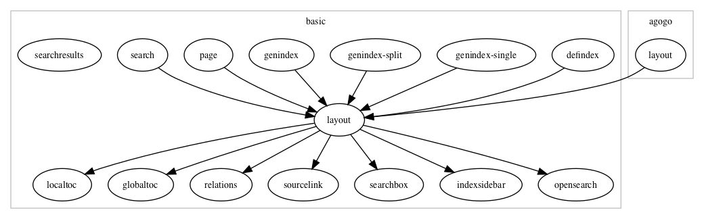

HTML Template Proposal for Sphinx 2.x Sphinx 2.xに向けてのHTMLテンプレート改善のご提案 SphinxCon 2017 11/28/2017 Yoshiki Shibukawa 1
Who Are You Yoshiki Shibukawa Sphinx-Users.jp Founder Sphinx Commiter Work at Future Architect, Inc. Twitter: @shibu_jp I use Sphinx for writing books 2
HTML output of Sphinx 1.x Sphinx supports HTML4 output for 10 years 1997: HTML4 released 2007: Sphinx first release 2008: Browsers start supporting HTML5 2014: HTML5 becomes W3C Recommendation 2016: Docutils 0.13 supports HTML5 2017: Sphinx 1.6 supports HTML5 We are ready to forward to brilliant future! 3
Brilliant Future of Sphinx 2.x (My Idea) Simplify HTML template Improve Searching Feature Open Graph Protocol Offline Mode Improve Performance 4
Simplify HTML template Current HTML template has deep dependency It is difficult to understand how HTML template work It is easy to keep same structure of installed template It is difficult to create original template  Create thin HTML template 5
Improve Searching Feature Split searching index into words/positions Words are read from all pages Search word completion Add search words from extensions e.g. Node texts in blockdiag 6
Open Graph Protocol OGP is used from SNS like Facebook/Twitter/Slack WebPage summary cards on SNS are created from OGP OGP is meta tags/JSON+LD in <head> tag 7
Offline Mode Offline mode had been a dream of many Web Developers deleted: Google Gears deprecated: Application Cache new: Service Worker Service Worker is the best solution ever WorkBox is good framework for caching (https://developers.google.com/web/tools/workbox/). 8
Improve Performance Prefetch Prefetch all/next contents of document to improve downloading speed AMP Improve mobile performance during poor network speed. 9
Conclusion We are ready to forward to brilliant future! More features to provide information to readers easier Easy to customize Easy to search Easy to share Performance 10